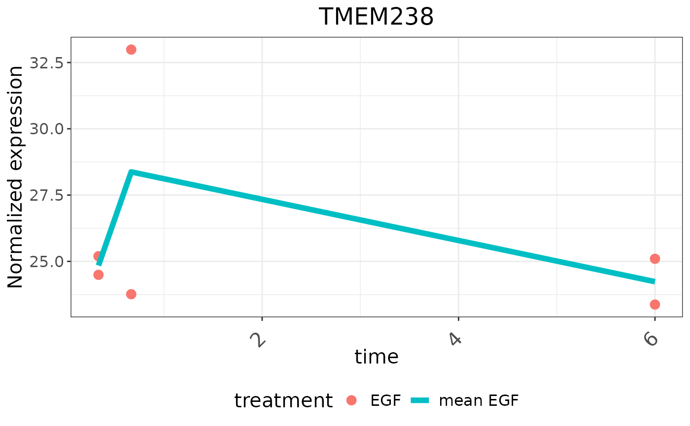

Plot Time Series Data for a gene or phospho site from SummarizedExperiment object
Source:R/time_series_clustering.R
plotTimeSeries.RdplotTimeSeries plots time series data for a given gene or phospho site
from a given SummarizedExperiment object, allowing different types of
plots such as expression, log fold change, or two-condition expression.
Usage
plotTimeSeries(
se,
type = c("expression", "logFC", "two-condition expression"),
geneID,
symbol,
condition,
treatment,
refTreat,
addZero = FALSE,
zeroTreat = NULL,
timerange
)Arguments
- se
A
SummarizedExperimentobject containing the data.- type
Character. The type of plot to generate. Options are " expression", "logFC", or "two-condition expression".- geneID
Character. The identifier of the gene or feature to plot.- symbol
Character. The symbol or name of the gene or feature to use as the plot title.- condition
Character. The condition corresponds to one of the columns from the colData of SE object.- treatment
Character. The treatment to use for filtering the data.- refTreat
Character. The reference treatment to compare against.- addZero
Logical, whether to add a zero time point to the data. Default isFALSE.- zeroTreat
Character. The treatment to use for adding the zero time point. Default isNULL.- timerange
Charactervector.The range of time points to include in the plot.
Details
This function generates time series plots for a specified gene or feature
from a SummarizedExperiment (SE) object. The type of plot can be one
of the following:
- "expression": Plots normalized expression levels over time.
- "logFC": Plots log fold change (logFC) over time, comparing a treatment to
a reference treatment.
- "two-condition expression": Plots normalized expression levels over time
for two conditions.
The function can add a zero time point if specified and handles data with and without subject-specific information. The plot includes points for each time point and a summary line representing the mean value.
The x-axis represents time, and the y-axis represents the selected metric (normalized expression or logFC). The plot is customized with various aesthetic elements, such as point size, line type, axis labels, and title formatting.
Examples
library(SummarizedExperiment)
# Load multiAssayExperiment object
data("dda_example")
# Get SummarizedExperiment object
se <- dda_example[["Proteome"]]
colData(se) <- colData(dda_example)
# Preprocess the proteome assay
result <- preprocessProteome(se, normalize = TRUE)
# Plot a specific gene experssion over time
timerange <- unique(se$timepoint)
plotTimeSeries(result, type = "expression", geneID = "p18",
symbol = "TMEM238", condition = "treatment", treatment = "EGF",
timerange = timerange)
